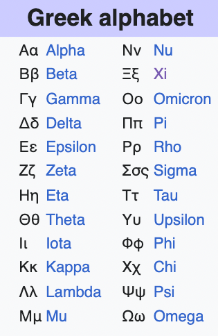

Some resources#
Basic background#
Jeanette Mumford has a great series of videos on regression (and other series too, on mixed effects, fMRI)
Basic statistics terminology This video gently introduces some of the key concepts that provide the foundation for statistics. Simple Linear Regression This video explains how a regression works using a single variable. Matrix Algebra Basics This video provides the background linear algebra needed for understanding the GLM. Multiple Linear Regression This video explains how multiple regression works using linear algebra. Hypothesis Testing This video covers the basics of hypothesis testing. Contrasts in Linear Models This video provides an overview of how to test hypotheses using contrasts in the context of the GLM. Interpreting Regression Parameters This video covers how to interpret the results from a regression analysis. Mean Centering Regressors This video covers a more subtle detail of why you might consider mean centering your continuous regression variables.
Greek alphabet#

Probability distributions#
We won’t cover these extensively, but it would be good to integrate in the future: https://awstip.com/statistical-probability-distributions-89398c4b68c7 https://en.wikipedia.org/wiki/Relationships_among_probability_distributions
Choosing a statistical test#
Here is a guide to choosing a statistical test in the classic way, courtesy of the University of Colorado, Boulder psychology stats instructors:

You can use a GLM for all of these tests, and more complex designs as well. Here’s a re-do of this breaking it down by (1) Whether there are correlated errors or not, and (2) Whether you need a link function to link the linear model to outcomes.

Here’s a reorganization of statistical tests that are all examples of a GLM with uncorrelated errors.

Here are repeated measures tests:

Getting started with programming#
There are many resources – the key is finding which are most useful!
These may be useful for Matlab:
Machine learning
Reinforcement learning
https://www.mathworks.com/help/reinforcement-learning/getting-started-with-reinforcement-learning-toolbox.html?s_tid=CRUX_topnav
Google Colab machine learning with tensor flow
https://colab.research.google.com/?utm_source=scs-index#scrollTo=P-H6Lw1vyNNd
https://www.tensorflow.org/hub/tutorials/tf2_text_classification
Mixed effects in Python
https://www.pythonfordatascience.org/mixed-effects-regression-python/
https://towardsdatascience.com/how-to-run-linear-mixed-effects-models-in-python-jupyter-notebooks-4f8079c4b589
https://gist.github.com/jcheong0428/f25b47405d9d328691c102787bc92175